R284B — photographic interiors and specular reflections
For review: prefer T for the two colored tails. Compare R1 with R4 for reflection measurements: R4 repairs a weak/strong highlight merger that R1 misses. J improves the wandering yellow example but fails as a universal colored rule. No method has been adopted.
Full scientific report · Complete requirements · Existing algorithm explained · Numerical validation
White + = native support centroid; orange × = initial photographic cue; green dot = measured intensity peak; dashed blue = image-derived centerline. Filled cells are exact native support; cyan curves are native boundaries for colored material and separate subpixel contours for R1–R4. Black-body centers and crossing remain unknown. Click panels for full resolution.
249 fixed image-only cues in ten crops, including unresolved and incorrect proposals. These are not 249 verified beads. Importance is high; reliability is unrated. Counts and boundary gradients do not certify ownership.
two-sided
T removes the two lower-left tails while retaining all three reviewed observations. I/J remove the yellow tail but truncate the red interior. E/W/L preserve or enlarge unwanted material. The red remains crossing; both yellows remain near.
User: remove bottom cyan spike; include left red crossing and right yellow.
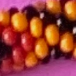
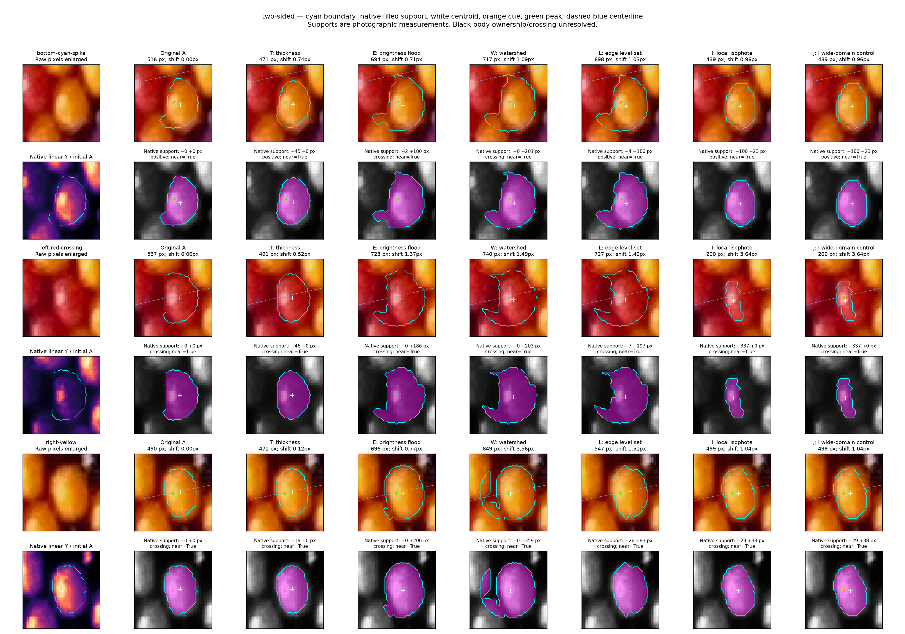
Exact principal metrics and method captions
| Feature / method | Area | Removed / added | Centroid shift | Evidence / limitation |
|---|
| bottom-cyan-spike / A | 516 | 0 / 0 | 0.00px | Historical compact support; tails, collars and inherited ownership errors remain. |
| bottom-cyan-spike / T | 471 | 45 / 0 | 0.74px | Native thickness opening; subset of A, no restored rim. Can remove valid narrow material. |
| bottom-cyan-spike / E | 694 | 2 / 180 | 0.71px | Connected brightness-barrier flood; can bypass a valley and leak through another route. |
| bottom-cyan-spike / W | 717 | 0 / 201 | 1.09px | Competing intensity basins; marker multiplicity flags possible false partitions, not bead counts. |
| bottom-cyan-spike / L | 698 | 4 / 186 | 1.03px | Gradient level set with curvature smoothing; may expand, notch or stop at material bounds. |
| bottom-cyan-spike / I | 439 | 100 / 23 | 0.96px | Local isophote, 18px domain; can isolate yellow interiors but truncate red shading. |
| bottom-cyan-spike / J | 439 | 100 / 23 | 0.96px | Same isophote, 24px domain ablation; tests clipping, increases leakage risk. |
| left-red-crossing / A | 537 | 0 / 0 | 0.00px | Historical compact support; tails, collars and inherited ownership errors remain. |
| left-red-crossing / T | 491 | 46 / 0 | 0.52px | Native thickness opening; subset of A, no restored rim. Can remove valid narrow material. |
| left-red-crossing / E | 723 | 0 / 186 | 1.37px | Connected brightness-barrier flood; can bypass a valley and leak through another route. |
| left-red-crossing / W | 740 | 0 / 203 | 1.49px | Competing intensity basins; marker multiplicity flags possible false partitions, not bead counts. |
| left-red-crossing / L | 727 | 7 / 197 | 1.42px | Gradient level set with curvature smoothing; may expand, notch or stop at material bounds. |
| left-red-crossing / I | 200 | 337 / 0 | 3.64px | Local isophote, 18px domain; can isolate yellow interiors but truncate red shading. |
| left-red-crossing / J | 200 | 337 / 0 | 3.64px | Same isophote, 24px domain ablation; tests clipping, increases leakage risk. |
| right-yellow / A | 490 | 0 / 0 | 0.00px | Historical compact support; tails, collars and inherited ownership errors remain. |
| right-yellow / T | 471 | 19 / 0 | 0.12px | Native thickness opening; subset of A, no restored rim. Can remove valid narrow material. |
| right-yellow / E | 696 | 0 / 206 | 0.77px | Connected brightness-barrier flood; can bypass a valley and leak through another route. |
| right-yellow / W | 849 | 0 / 359 | 3.56px | Competing intensity basins; marker multiplicity flags possible false partitions, not bead counts. |
| right-yellow / L | 547 | 26 / 83 | 1.51px | Gradient level set with curvature smoothing; may expand, notch or stop at material bounds. |
| right-yellow / I | 499 | 29 / 38 | 1.04px | Local isophote, 18px domain; can isolate yellow interiors but truncate red shading. |
| right-yellow / J | 499 | 29 / 38 | 1.04px | Same isophote, 24px domain ablation; tests clipping, increases leakage risk. |
All cues in this crop, including unresolved and failed proposals
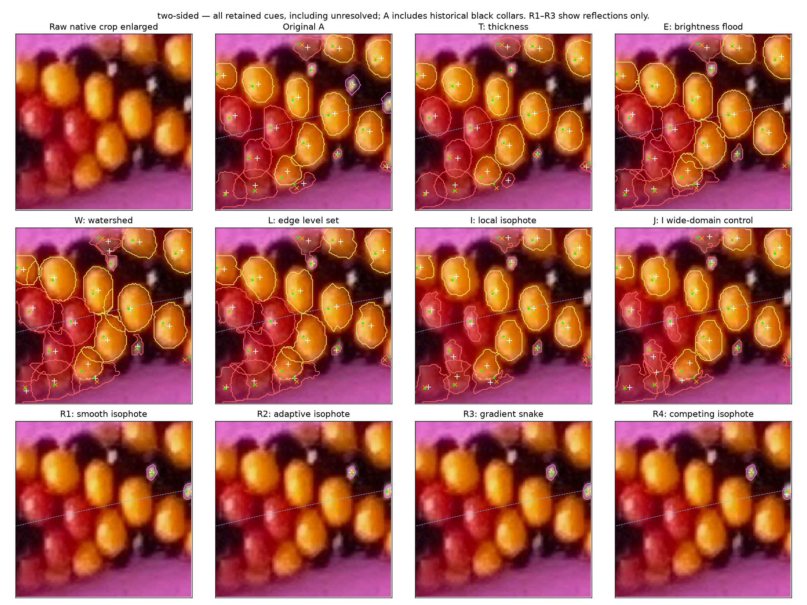
Oversized and conflicting masks are diagnostics, not accepted measurements. Empty outputs are retained in the data.
Exact native runs, intensity arrays, contours, provenance and pair diagnostics
duplicate
R1 and R4 preserve the elongated upper reflection at essentially the same location. R2 measures a smaller bright core; R3 contracts too far. The lower feature is retained as a secondary reflection with unresolved physical ownership. See the red neighbor and secondary detail below.
User: upper black reflection good, lower secondary. Compare the red right of upper black.
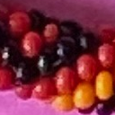
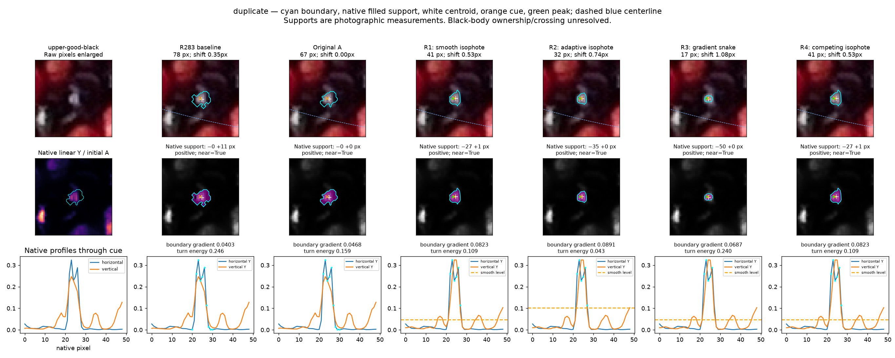
Exact principal metrics and method captions
| Feature / method | Area | Removed / added | Centroid shift | Evidence / limitation |
|---|
| upper-good-black / R283 | 78 | 0 / 11 | 0.35px | Historical comparison only; its dark collar is not a reflection measurement. |
| upper-good-black / A | 67 | 0 / 0 | 0.00px | Historical compact support; tails, collars and inherited ownership errors remain. |
| upper-good-black / R1 | 41 | 27 / 1 | 0.53px | Smoothed-field isophote plus separate native threshold support; may join weak/strong highlights. |
| upper-good-black / R2 | 32 | 35 / 0 | 0.74px | Adaptive local intensity threshold; smaller core, occasional loss or neighbor substitution. |
| upper-good-black / R3 | 17 | 50 / 0 | 1.08px | Gradient snake; contraction and instability remain; rejected moves fall back to the isophote. |
| upper-good-black / R4 | 41 | 27 / 1 | 0.53px | Competing-highlight isophote; preserves separate features, with possible basin clipping. |
Lower secondary reflection and red neighbor
Secondary status is user review evidence. Same-bead ownership is not established and the observation is never deleted.
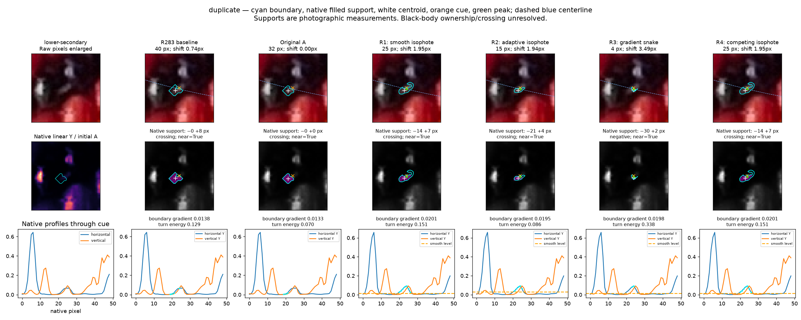
| Feature / method | Area | Removed / added | Centroid shift | Evidence / limitation |
|---|
| lower-secondary / R283 | 40 | 0 / 8 | 0.74px | Historical comparison only; its dark collar is not a reflection measurement. |
| lower-secondary / A | 32 | 0 / 0 | 0.00px | Historical compact support; tails, collars and inherited ownership errors remain. |
| lower-secondary / R1 | 25 | 14 / 7 | 1.95px | Smoothed-field isophote plus separate native threshold support; may join weak/strong highlights. |
| lower-secondary / R2 | 15 | 21 / 4 | 1.94px | Adaptive local intensity threshold; smaller core, occasional loss or neighbor substitution. |
| lower-secondary / R3 | 4 | 30 / 2 | 3.49px | Gradient snake; contraction and instability remain; rejected moves fall back to the isophote. |
| lower-secondary / R4 | 25 | 14 / 7 | 1.95px | Competing-highlight isophote; preserves separate features, with possible basin clipping. |
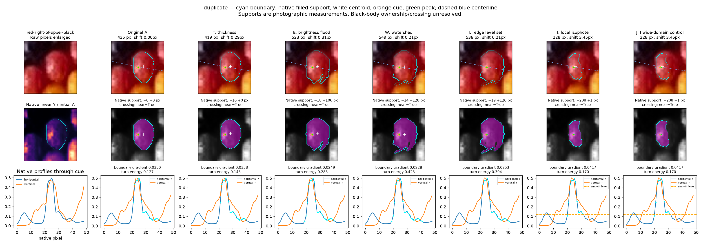
| Feature / method | Area | Removed / added | Centroid shift | Evidence / limitation |
|---|
| red-right-of-upper-black / A | 435 | 0 / 0 | 0.00px | Historical compact support; tails, collars and inherited ownership errors remain. |
| red-right-of-upper-black / T | 419 | 16 / 0 | 0.29px | Native thickness opening; subset of A, no restored rim. Can remove valid narrow material. |
| red-right-of-upper-black / E | 523 | 18 / 106 | 0.31px | Connected brightness-barrier flood; can bypass a valley and leak through another route. |
| red-right-of-upper-black / W | 549 | 14 / 128 | 0.21px | Competing intensity basins; marker multiplicity flags possible false partitions, not bead counts. |
| red-right-of-upper-black / L | 536 | 19 / 120 | 0.21px | Gradient level set with curvature smoothing; may expand, notch or stop at material bounds. |
| red-right-of-upper-black / I | 228 | 208 / 1 | 3.45px | Local isophote, 18px domain; can isolate yellow interiors but truncate red shading. |
| red-right-of-upper-black / J | 228 | 208 / 1 | 3.45px | Same isophote, 24px domain ablation; tests clipping, increases leakage risk. |
All cues in this crop, including unresolved and failed proposals
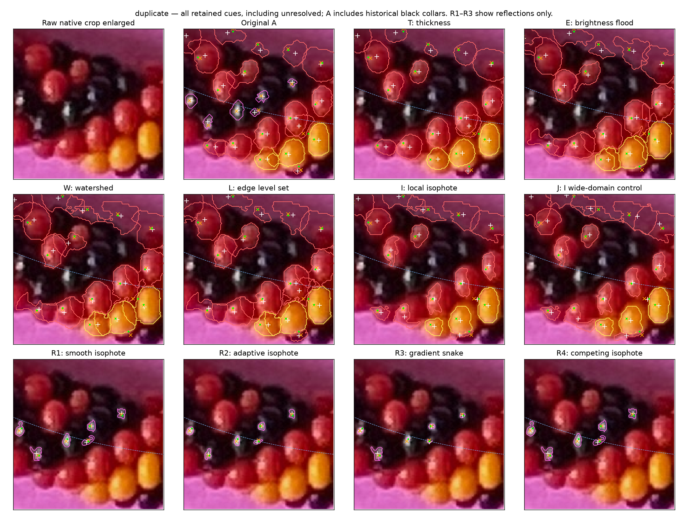
Oversized and conflicting masks are diagnostics, not accepted measurements. Empty outputs are retained in the data.
Exact native runs, intensity arrays, contours, provenance and pair diagnostics
abstention
J follows the lower intensity profile and removes the left branch most convincingly here. I stops at its 18px search radius. E is still clipped; W branches into the neighbor; L retains a notch. J is a domain ablation, not a new independent algorithm, and fails elsewhere.
User: magenta outline very wrong; redesign native support.
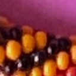
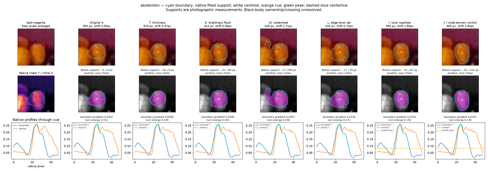
Exact principal metrics and method captions
| Feature / method | Area | Removed / added | Centroid shift | Evidence / limitation |
|---|
| bad-magenta / A | 355 | 0 / 0 | 0.00px | Historical compact support; tails, collars and inherited ownership errors remain. |
| bad-magenta / T | 319 | 36 / 0 | 0.67px | Native thickness opening; subset of A, no restored rim. Can remove valid narrow material. |
| bad-magenta / E | 414 | 21 / 80 | 0.96px | Connected brightness-barrier flood; can bypass a valley and leak through another route. |
| bad-magenta / W | 545 | 0 / 190 | 2.71px | Competing intensity basins; marker multiplicity flags possible false partitions, not bead counts. |
| bad-magenta / L | 416 | 17 / 78 | 0.75px | Gradient level set with curvature smoothing; may expand, notch or stop at material bounds. |
| bad-magenta / I | 350 | 52 / 47 | 1.80px | Local isophote, 18px domain; can isolate yellow interiors but truncate red shading. |
| bad-magenta / J | 405 | 52 / 102 | 2.65px | Same isophote, 24px domain ablation; tests clipping, increases leakage risk. |
All cues in this crop, including unresolved and failed proposals
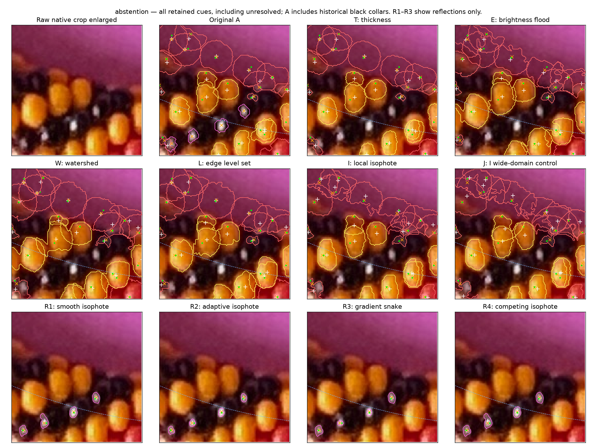
Oversized and conflicting masks are diagnostics, not accepted measurements. Empty outputs are retained in the data.
Exact native runs, intensity arrays, contours, provenance and pair diagnostics
auto-red
T keeps a substantial red interior with a small centroid shift. I/J cut a crescent around the highlight despite stronger boundary gradients; that is truncation, not improved ownership. E/W/L expand the lower rim.
Highest solidity × min(area,400) R283 high red crossing support; >180px from earlier cases. This selects established cues, not blind recall ground truth.

Selected anchor: C-1128-1530 — native support, contours and brightness profiles
Matched image cue distance 1.00px; this is not a physical correspondence.
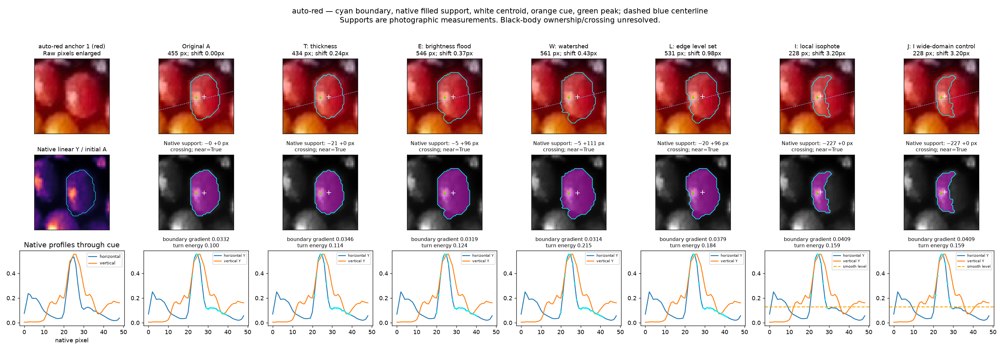
| Feature / method | Area | Removed / added | Centroid shift | Evidence / limitation |
|---|
| auto-red anchor 1 (red) / A | 455 | 0 / 0 | 0.00px | Historical compact support; tails, collars and inherited ownership errors remain. |
| auto-red anchor 1 (red) / T | 434 | 21 / 0 | 0.24px | Native thickness opening; subset of A, no restored rim. Can remove valid narrow material. |
| auto-red anchor 1 (red) / E | 546 | 5 / 96 | 0.37px | Connected brightness-barrier flood; can bypass a valley and leak through another route. |
| auto-red anchor 1 (red) / W | 561 | 5 / 111 | 0.43px | Competing intensity basins; marker multiplicity flags possible false partitions, not bead counts. |
| auto-red anchor 1 (red) / L | 531 | 20 / 96 | 0.98px | Gradient level set with curvature smoothing; may expand, notch or stop at material bounds. |
| auto-red anchor 1 (red) / I | 228 | 227 / 0 | 3.20px | Local isophote, 18px domain; can isolate yellow interiors but truncate red shading. |
| auto-red anchor 1 (red) / J | 228 | 227 / 0 | 3.20px | Same isophote, 24px domain ablation; tests clipping, increases leakage risk. |
All cues in this crop, including unresolved and failed proposals
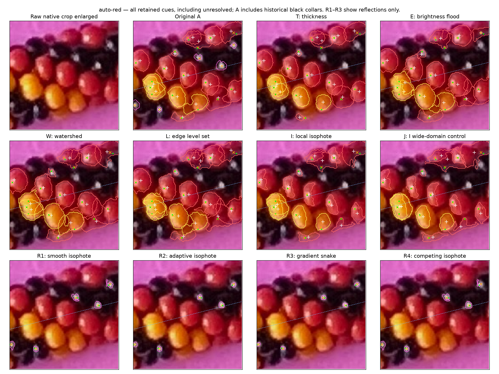
Oversized and conflicting masks are diagnostics, not accepted measurements. Empty outputs are retained in the data.
Exact native runs, intensity arrays, contours, provenance and pair diagnostics
auto-yellow
T remains compact. E/W visibly extend into the adjacent yellow bead. I/J remain confined in this example; L adds a small upper protrusion. A large connected region is not evidence of a single bead.
Highest solidity × min(area,400) R283 high yellow crossing support; >180px from earlier cases. This selects established cues, not blind recall ground truth.

Selected anchor: C-1910-0478 — native support, contours and brightness profiles
Matched image cue distance 1.00px; this is not a physical correspondence.
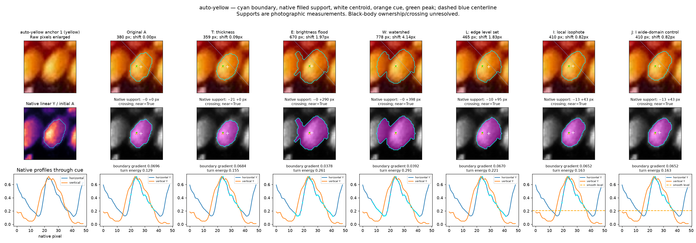
| Feature / method | Area | Removed / added | Centroid shift | Evidence / limitation |
|---|
| auto-yellow anchor 1 (yellow) / A | 380 | 0 / 0 | 0.00px | Historical compact support; tails, collars and inherited ownership errors remain. |
| auto-yellow anchor 1 (yellow) / T | 359 | 21 / 0 | 0.09px | Native thickness opening; subset of A, no restored rim. Can remove valid narrow material. |
| auto-yellow anchor 1 (yellow) / E | 670 | 0 / 290 | 1.97px | Connected brightness-barrier flood; can bypass a valley and leak through another route. |
| auto-yellow anchor 1 (yellow) / W | 778 | 0 / 398 | 4.14px | Competing intensity basins; marker multiplicity flags possible false partitions, not bead counts. |
| auto-yellow anchor 1 (yellow) / L | 465 | 10 / 95 | 1.83px | Gradient level set with curvature smoothing; may expand, notch or stop at material bounds. |
| auto-yellow anchor 1 (yellow) / I | 410 | 13 / 43 | 0.82px | Local isophote, 18px domain; can isolate yellow interiors but truncate red shading. |
| auto-yellow anchor 1 (yellow) / J | 410 | 13 / 43 | 0.82px | Same isophote, 24px domain ablation; tests clipping, increases leakage risk. |
All cues in this crop, including unresolved and failed proposals
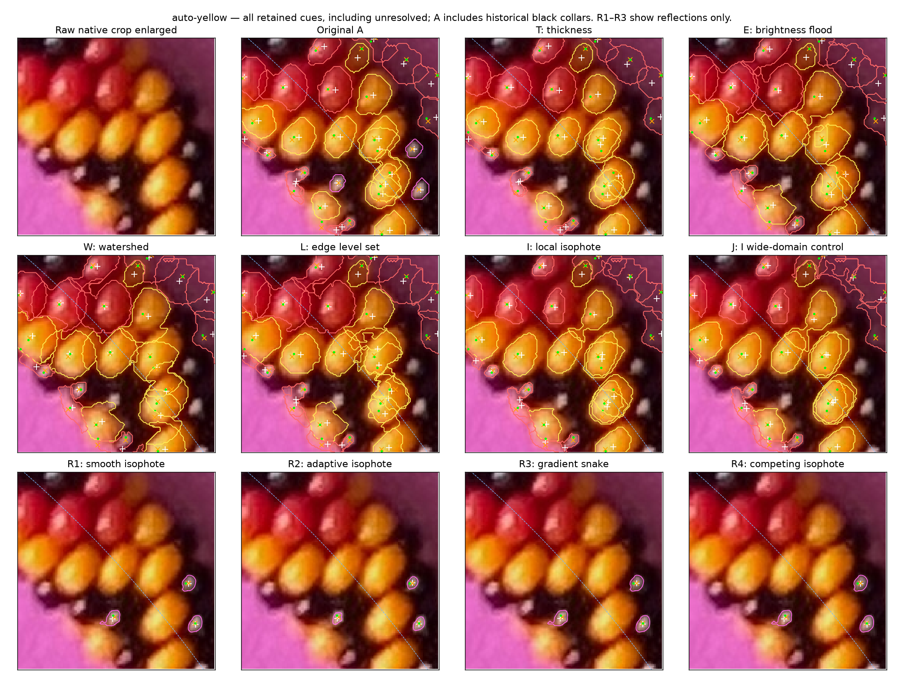
Oversized and conflicting masks are diagnostics, not accepted measurements. Empty outputs are retained in the data.
Exact native runs, intensity arrays, contours, provenance and pair diagnostics
auto-black
The strong reflection is much smaller than its historical dark collar. R1/R4 follow the bright footprint; R2 contracts further. A small centroid shift does not imply recovery of the physical bead center.
Highest solidity × min(area,400) R283 high black near support; >180px from earlier cases. This selects established cues, not blind recall ground truth.
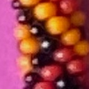
Selected anchor: D40-K-2250-1499 — native support, contours and brightness profiles
Matched image cue distance 1.41px; this is not a physical correspondence.
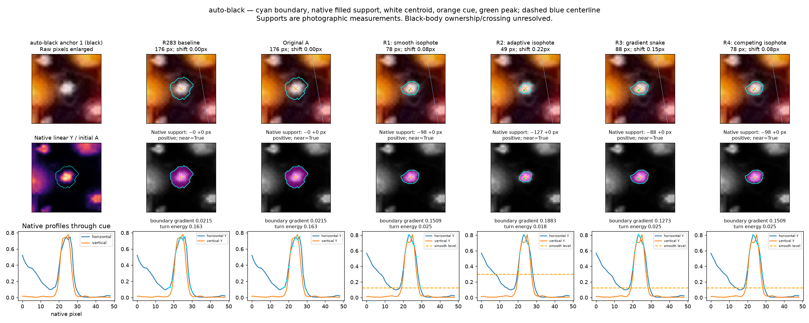
| Feature / method | Area | Removed / added | Centroid shift | Evidence / limitation |
|---|
| auto-black anchor 1 (black) / R283 | 176 | 0 / 0 | 0.00px | Historical comparison only; its dark collar is not a reflection measurement. |
| auto-black anchor 1 (black) / A | 176 | 0 / 0 | 0.00px | Historical compact support; tails, collars and inherited ownership errors remain. |
| auto-black anchor 1 (black) / R1 | 78 | 98 / 0 | 0.08px | Smoothed-field isophote plus separate native threshold support; may join weak/strong highlights. |
| auto-black anchor 1 (black) / R2 | 49 | 127 / 0 | 0.22px | Adaptive local intensity threshold; smaller core, occasional loss or neighbor substitution. |
| auto-black anchor 1 (black) / R3 | 88 | 88 / 0 | 0.15px | Gradient snake; contraction and instability remain; rejected moves fall back to the isophote. |
| auto-black anchor 1 (black) / R4 | 78 | 98 / 0 | 0.08px | Competing-highlight isophote; preserves separate features, with possible basin clipping. |
All cues in this crop, including unresolved and failed proposals
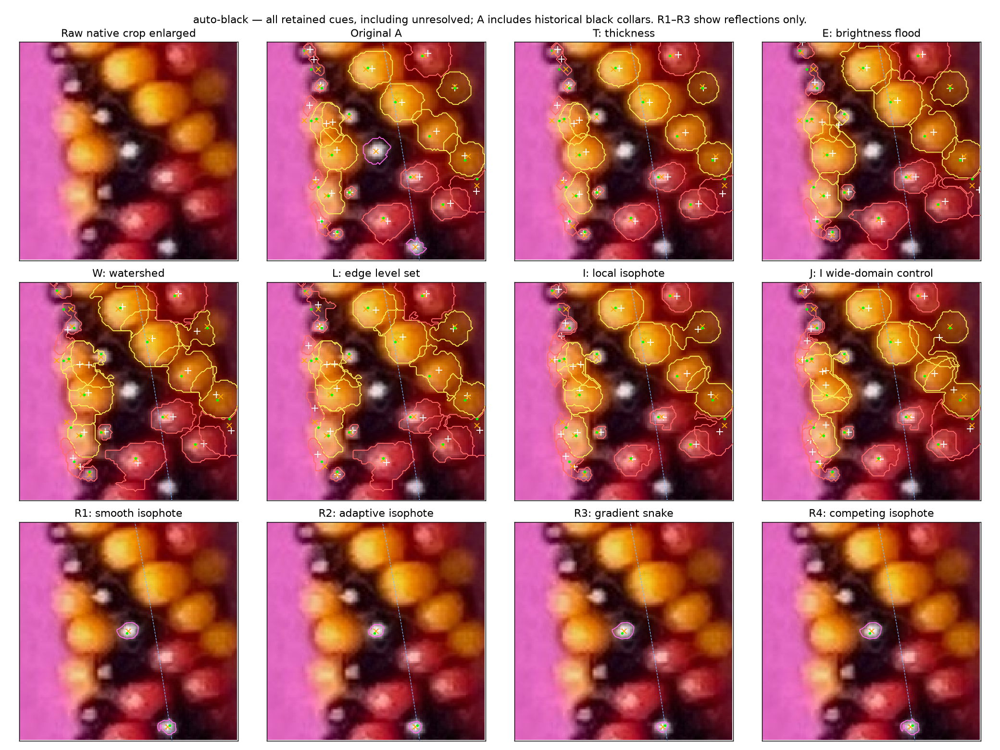
Oversized and conflicting masks are diagnostics, not accepted measurements. Empty outputs are retained in the data.
Exact native runs, intensity arrays, contours, provenance and pair diagnostics
auto-opposite
Opposite-side colored observations remain eligible under T. E/W/L enlarge interfaces and conflicts. I/J shrink red interiors toward highlights. R1/R4 measure black reflections separately; whole black-body crossing remains unknown.
First saved R283 disjoint opposite-side near pair >180px from earlier cases, stable saved order.

Selected anchor: C-0870-0396 — native support, contours and brightness profiles
Matched image cue distance 2.00px; this is not a physical correspondence.
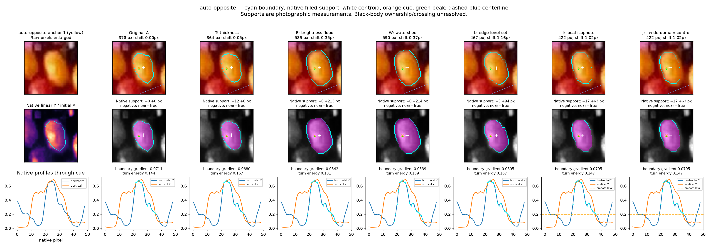
| Feature / method | Area | Removed / added | Centroid shift | Evidence / limitation |
|---|
| auto-opposite anchor 1 (yellow) / A | 376 | 0 / 0 | 0.00px | Historical compact support; tails, collars and inherited ownership errors remain. |
| auto-opposite anchor 1 (yellow) / T | 364 | 12 / 0 | 0.05px | Native thickness opening; subset of A, no restored rim. Can remove valid narrow material. |
| auto-opposite anchor 1 (yellow) / E | 589 | 0 / 213 | 0.35px | Connected brightness-barrier flood; can bypass a valley and leak through another route. |
| auto-opposite anchor 1 (yellow) / W | 590 | 0 / 214 | 0.37px | Competing intensity basins; marker multiplicity flags possible false partitions, not bead counts. |
| auto-opposite anchor 1 (yellow) / L | 467 | 3 / 94 | 1.16px | Gradient level set with curvature smoothing; may expand, notch or stop at material bounds. |
| auto-opposite anchor 1 (yellow) / I | 422 | 17 / 63 | 1.02px | Local isophote, 18px domain; can isolate yellow interiors but truncate red shading. |
| auto-opposite anchor 1 (yellow) / J | 422 | 17 / 63 | 1.02px | Same isophote, 24px domain ablation; tests clipping, increases leakage risk. |
Selected anchor: C-0883-0431 — native support, contours and brightness profiles
Matched image cue distance 1.41px; this is not a physical correspondence.
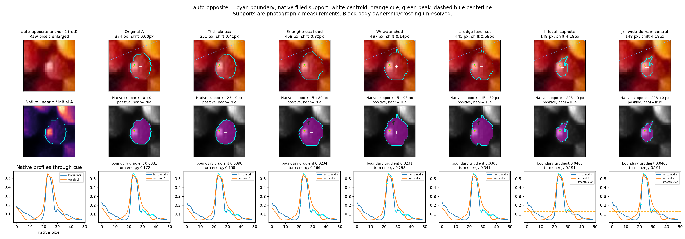
| Feature / method | Area | Removed / added | Centroid shift | Evidence / limitation |
|---|
| auto-opposite anchor 2 (red) / A | 374 | 0 / 0 | 0.00px | Historical compact support; tails, collars and inherited ownership errors remain. |
| auto-opposite anchor 2 (red) / T | 351 | 23 / 0 | 0.41px | Native thickness opening; subset of A, no restored rim. Can remove valid narrow material. |
| auto-opposite anchor 2 (red) / E | 458 | 5 / 89 | 0.30px | Connected brightness-barrier flood; can bypass a valley and leak through another route. |
| auto-opposite anchor 2 (red) / W | 467 | 5 / 98 | 0.14px | Competing intensity basins; marker multiplicity flags possible false partitions, not bead counts. |
| auto-opposite anchor 2 (red) / L | 441 | 15 / 82 | 0.58px | Gradient level set with curvature smoothing; may expand, notch or stop at material bounds. |
| auto-opposite anchor 2 (red) / I | 148 | 226 / 0 | 4.18px | Local isophote, 18px domain; can isolate yellow interiors but truncate red shading. |
| auto-opposite anchor 2 (red) / J | 148 | 226 / 0 | 4.18px | Same isophote, 24px domain ablation; tests clipping, increases leakage risk. |
All cues in this crop, including unresolved and failed proposals
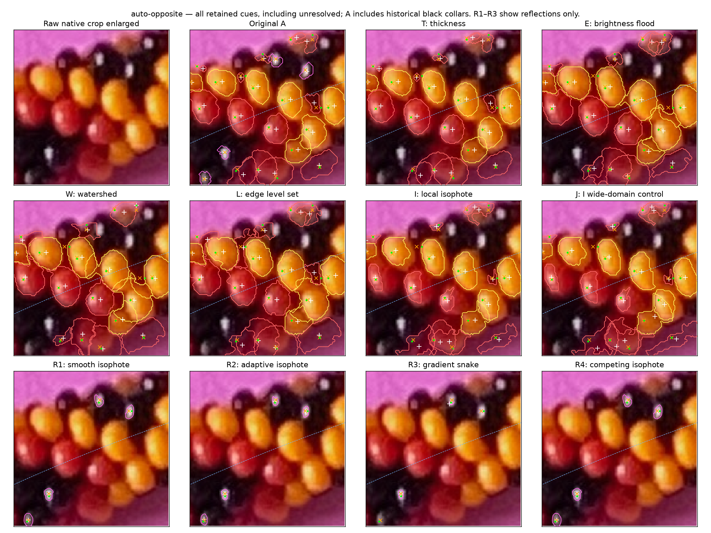
Oversized and conflicting masks are diagnostics, not accepted measurements. Empty outputs are retained in the data.
Exact native runs, intensity arrays, contours, provenance and pair diagnostics
auto-three
The selected two yellow observations and black reflection remain separate under T plus R1/R4. The full cue overview also exposes inherited paper-facing and wrong-material proposals; none are promoted. A black candidate elsewhere in this crop has an ineligible peak and remains unresolved.
Exactly three R283 high support-near IDs within ±16px arc and 65px Euclidean; maximize side diversity, then support area; >180px from earlier cases. Three candidates, not verified bodies.

Selected anchor: C-2132-2559 — native support, contours and brightness profiles
Matched image cue distance 2.24px; this is not a physical correspondence.
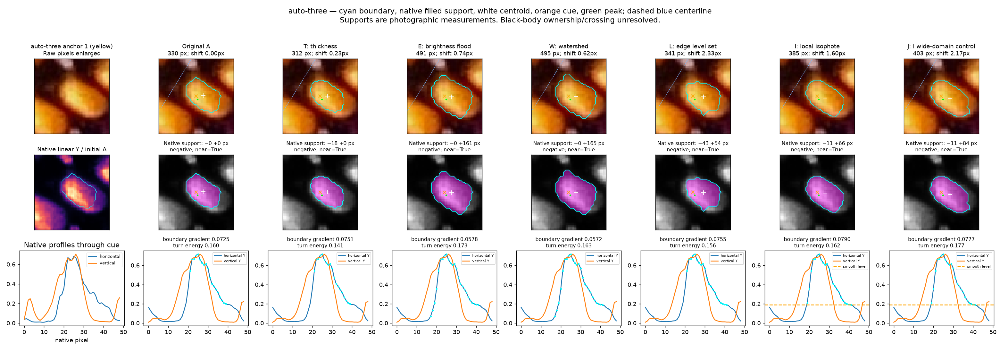
| Feature / method | Area | Removed / added | Centroid shift | Evidence / limitation |
|---|
| auto-three anchor 1 (yellow) / A | 330 | 0 / 0 | 0.00px | Historical compact support; tails, collars and inherited ownership errors remain. |
| auto-three anchor 1 (yellow) / T | 312 | 18 / 0 | 0.23px | Native thickness opening; subset of A, no restored rim. Can remove valid narrow material. |
| auto-three anchor 1 (yellow) / E | 491 | 0 / 161 | 0.74px | Connected brightness-barrier flood; can bypass a valley and leak through another route. |
| auto-three anchor 1 (yellow) / W | 495 | 0 / 165 | 0.62px | Competing intensity basins; marker multiplicity flags possible false partitions, not bead counts. |
| auto-three anchor 1 (yellow) / L | 341 | 43 / 54 | 2.33px | Gradient level set with curvature smoothing; may expand, notch or stop at material bounds. |
| auto-three anchor 1 (yellow) / I | 385 | 11 / 66 | 1.60px | Local isophote, 18px domain; can isolate yellow interiors but truncate red shading. |
| auto-three anchor 1 (yellow) / J | 403 | 11 / 84 | 2.17px | Same isophote, 24px domain ablation; tests clipping, increases leakage risk. |
Selected anchor: C-2105-2574 — native support, contours and brightness profiles
Matched image cue distance 2.24px; this is not a physical correspondence.
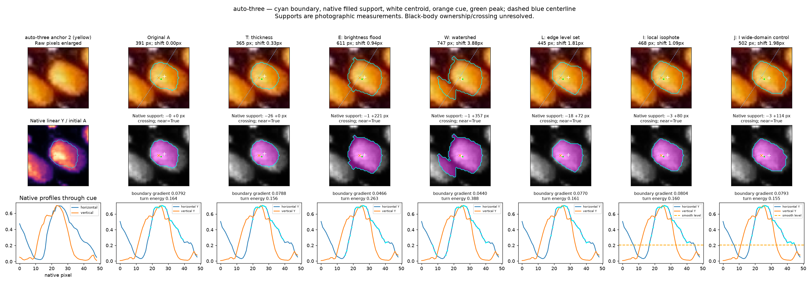
| Feature / method | Area | Removed / added | Centroid shift | Evidence / limitation |
|---|
| auto-three anchor 2 (yellow) / A | 391 | 0 / 0 | 0.00px | Historical compact support; tails, collars and inherited ownership errors remain. |
| auto-three anchor 2 (yellow) / T | 365 | 26 / 0 | 0.33px | Native thickness opening; subset of A, no restored rim. Can remove valid narrow material. |
| auto-three anchor 2 (yellow) / E | 611 | 1 / 221 | 0.94px | Connected brightness-barrier flood; can bypass a valley and leak through another route. |
| auto-three anchor 2 (yellow) / W | 747 | 1 / 357 | 3.88px | Competing intensity basins; marker multiplicity flags possible false partitions, not bead counts. |
| auto-three anchor 2 (yellow) / L | 445 | 18 / 72 | 1.81px | Gradient level set with curvature smoothing; may expand, notch or stop at material bounds. |
| auto-three anchor 2 (yellow) / I | 468 | 3 / 80 | 1.09px | Local isophote, 18px domain; can isolate yellow interiors but truncate red shading. |
| auto-three anchor 2 (yellow) / J | 502 | 3 / 114 | 1.98px | Same isophote, 24px domain ablation; tests clipping, increases leakage risk. |
Selected anchor: D40-K-2099-2550 — native support, contours and brightness profiles
Matched image cue distance 1.41px; this is not a physical correspondence.
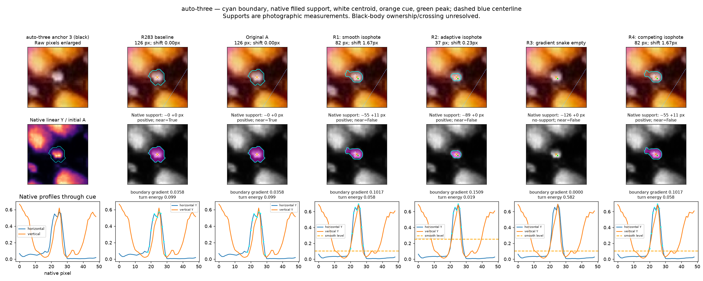
| Feature / method | Area | Removed / added | Centroid shift | Evidence / limitation |
|---|
| auto-three anchor 3 (black) / R283 | 126 | 0 / 0 | 0.00px | Historical comparison only; its dark collar is not a reflection measurement. |
| auto-three anchor 3 (black) / A | 126 | 0 / 0 | 0.00px | Historical compact support; tails, collars and inherited ownership errors remain. |
| auto-three anchor 3 (black) / R1 | 82 | 55 / 11 | 1.67px | Smoothed-field isophote plus separate native threshold support; may join weak/strong highlights. |
| auto-three anchor 3 (black) / R2 | 37 | 89 / 0 | 0.23px | Adaptive local intensity threshold; smaller core, occasional loss or neighbor substitution. |
| auto-three anchor 3 (black) / R3 | 0 | 126 / 0 | empty | Gradient snake; contraction and instability remain; rejected moves fall back to the isophote. |
| auto-three anchor 3 (black) / R4 | 82 | 55 / 11 | 1.67px | Competing-highlight isophote; preserves separate features, with possible basin clipping. |
All cues in this crop, including unresolved and failed proposals
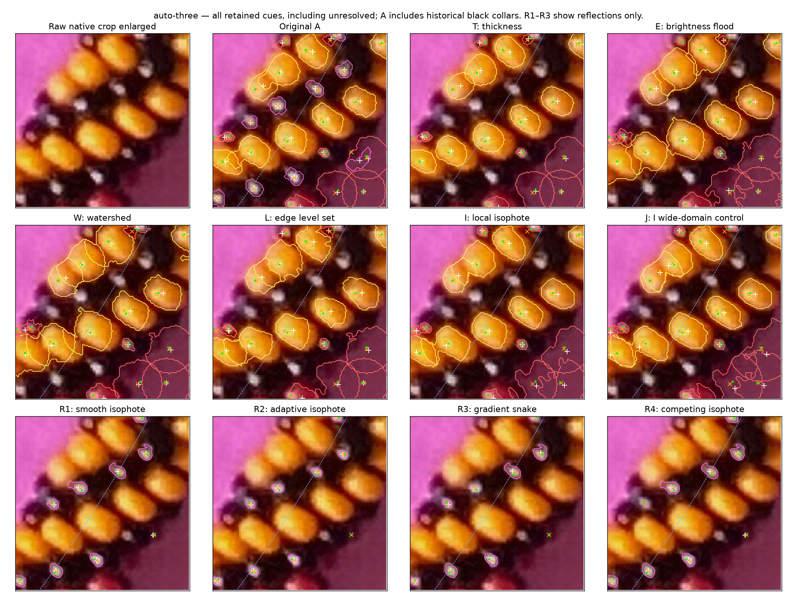
Oversized and conflicting masks are diagnostics, not accepted measurements. Empty outputs are retained in the data.
Exact native runs, intensity arrays, contours, provenance and pair diagnostics
auto-weak
Critical failure: R1 merges the weak feature with a brighter neighboring highlight (5.43px shift); R3 inherits it. R4 separates the intensity basins (22px, 2.53px shift); R2 retains a 25px core. R4 may clip at its basin boundary. Physical ownership is unresolved.
Lowest stored native illumination.peak, stable ID tie break; nonempty black near observation, >180px from prior cases. Native weakness verified separately.
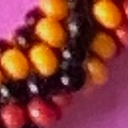
Selected anchor: R282-1936-2795 — native support, contours and brightness profiles
Matched image cue distance 0.00px; this is not a physical correspondence.
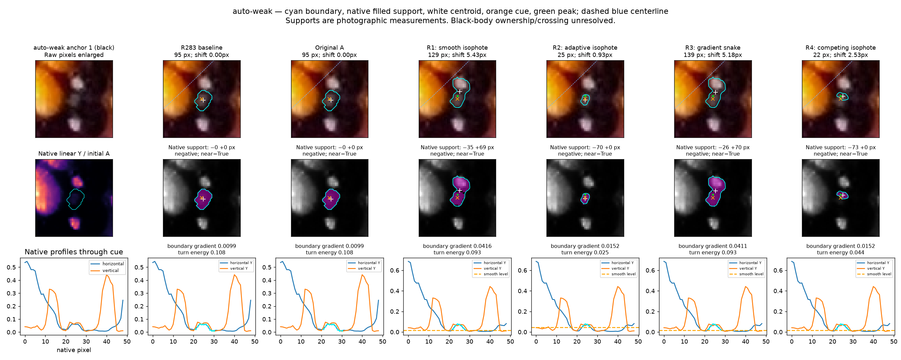
| Feature / method | Area | Removed / added | Centroid shift | Evidence / limitation |
|---|
| auto-weak anchor 1 (black) / R283 | 95 | 0 / 0 | 0.00px | Historical comparison only; its dark collar is not a reflection measurement. |
| auto-weak anchor 1 (black) / A | 95 | 0 / 0 | 0.00px | Historical compact support; tails, collars and inherited ownership errors remain. |
| auto-weak anchor 1 (black) / R1 | 129 | 35 / 69 | 5.43px | Smoothed-field isophote plus separate native threshold support; may join weak/strong highlights. |
| auto-weak anchor 1 (black) / R2 | 25 | 70 / 0 | 0.93px | Adaptive local intensity threshold; smaller core, occasional loss or neighbor substitution. |
| auto-weak anchor 1 (black) / R3 | 139 | 26 / 70 | 5.18px | Gradient snake; contraction and instability remain; rejected moves fall back to the isophote. |
| auto-weak anchor 1 (black) / R4 | 22 | 73 / 0 | 2.53px | Competing-highlight isophote; preserves separate features, with possible basin clipping. |
All cues in this crop, including unresolved and failed proposals
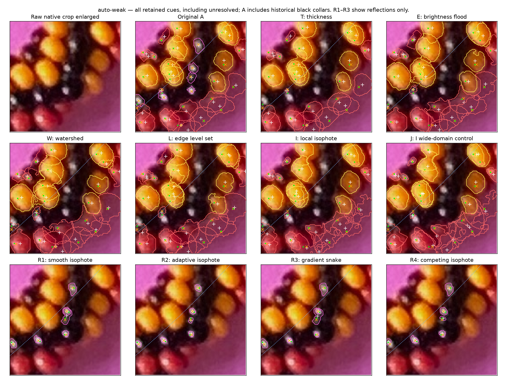
Oversized and conflicting masks are diagnostics, not accepted measurements. Empty outputs are retained in the data.
Exact native runs, intensity arrays, contours, provenance and pair diagnostics
auto-same-color
Selection intentionally preserves an imperfect same-color cue pair. The first red support stays compact under T. The second cue lies near a reflection/material interface: I/J wander across neighboring material; J exceeds the 870px ceiling. Its color/ownership is not established.
Closest pair of nonempty same-pigment cues at 14..30px, >180px from all earlier crops; stable ID tie breaks. Distinctness unverified.
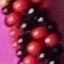
Selected anchor: E5-2131-0907 — native support, contours and brightness profiles
Matched image cue distance 1.41px; this is not a physical correspondence.
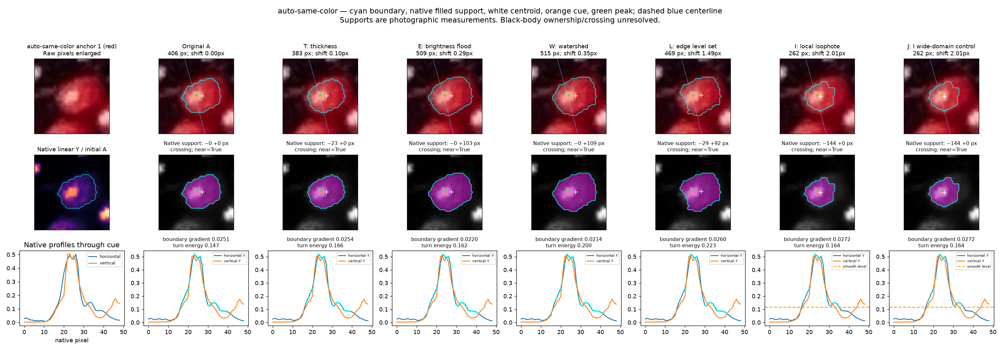
| Feature / method | Area | Removed / added | Centroid shift | Evidence / limitation |
|---|
| auto-same-color anchor 1 (red) / A | 406 | 0 / 0 | 0.00px | Historical compact support; tails, collars and inherited ownership errors remain. |
| auto-same-color anchor 1 (red) / T | 383 | 23 / 0 | 0.10px | Native thickness opening; subset of A, no restored rim. Can remove valid narrow material. |
| auto-same-color anchor 1 (red) / E | 509 | 0 / 103 | 0.29px | Connected brightness-barrier flood; can bypass a valley and leak through another route. |
| auto-same-color anchor 1 (red) / W | 515 | 0 / 109 | 0.35px | Competing intensity basins; marker multiplicity flags possible false partitions, not bead counts. |
| auto-same-color anchor 1 (red) / L | 469 | 29 / 92 | 1.49px | Gradient level set with curvature smoothing; may expand, notch or stop at material bounds. |
| auto-same-color anchor 1 (red) / I | 262 | 144 / 0 | 2.01px | Local isophote, 18px domain; can isolate yellow interiors but truncate red shading. |
| auto-same-color anchor 1 (red) / J | 262 | 144 / 0 | 2.01px | Same isophote, 24px domain ablation; tests clipping, increases leakage risk. |
Selected anchor: R282-2116-0904 — native support, contours and brightness profiles
Matched image cue distance 2.00px; this is not a physical correspondence.
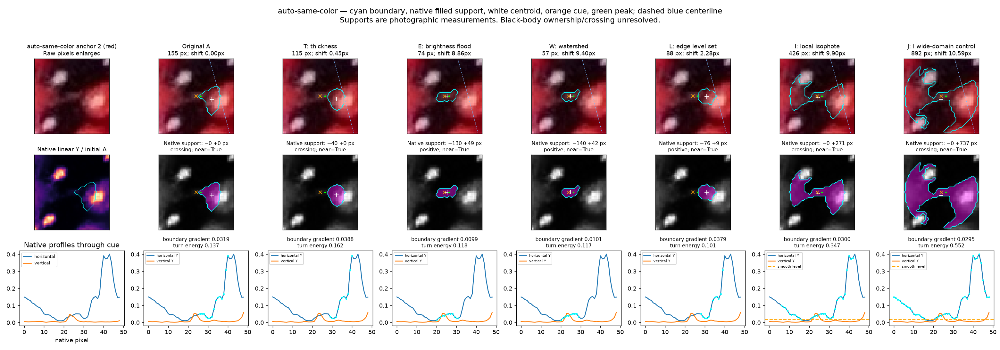
| Feature / method | Area | Removed / added | Centroid shift | Evidence / limitation |
|---|
| auto-same-color anchor 2 (red) / A | 155 | 0 / 0 | 0.00px | Historical compact support; tails, collars and inherited ownership errors remain. |
| auto-same-color anchor 2 (red) / T | 115 | 40 / 0 | 0.45px | Native thickness opening; subset of A, no restored rim. Can remove valid narrow material. |
| auto-same-color anchor 2 (red) / E | 74 | 130 / 49 | 8.86px | Connected brightness-barrier flood; can bypass a valley and leak through another route. |
| auto-same-color anchor 2 (red) / W | 57 | 140 / 42 | 9.40px | Competing intensity basins; marker multiplicity flags possible false partitions, not bead counts. |
| auto-same-color anchor 2 (red) / L | 88 | 76 / 9 | 2.28px | Gradient level set with curvature smoothing; may expand, notch or stop at material bounds. |
| auto-same-color anchor 2 (red) / I | 426 | 0 / 271 | 9.90px | Local isophote, 18px domain; can isolate yellow interiors but truncate red shading. |
| auto-same-color anchor 2 (red) / J | 892 | 0 / 737 | 10.59px | Same isophote, 24px domain ablation; tests clipping, increases leakage risk. |
All cues in this crop, including unresolved and failed proposals
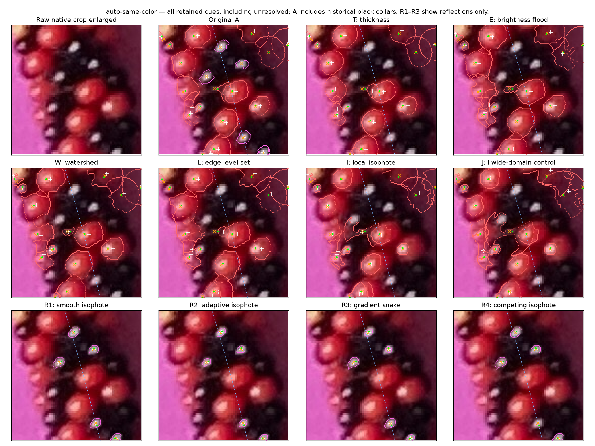
Oversized and conflicting masks are diagnostics, not accepted measurements. Empty outputs are retained in the data.
Exact native runs, intensity arrays, contours, provenance and pair diagnostics
Stopped for method selection. Proposed next step after review: test the chosen colored-tail and reflection rules with explicit clipping, merge and ownership abstention gates; preserve all independent observations.